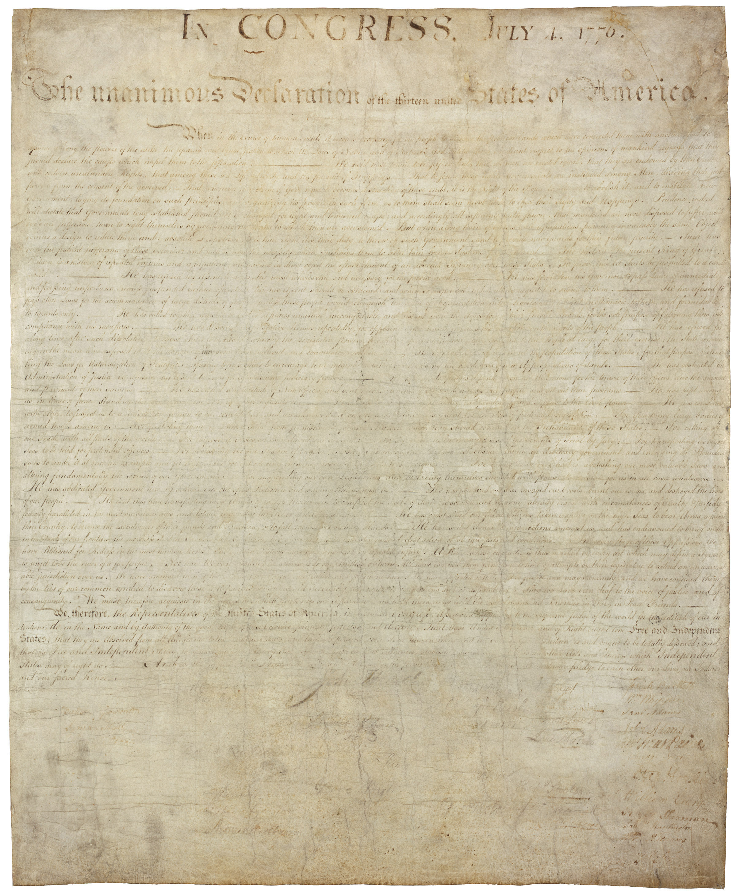

America's 250th birthday / July 4, 2026
How well do you know independence?
Take a 10 question quiz to see how much you really know about the nation's early history...and learn about the history and concepts behind one of the nation's most important documents.

Days until July 4, 2026
Calculating
The question
What do we remember, and what still needs explaining?
The Declaration of Independence gave birth to the very nation we call the United States of America today. It's principles established the government and individual rights we have...but how much do we really know about it?
Quick poll
What people recognize first
38 responses and counting
Ten-question Declaration check
Question 1 of 5
Score 0
Interactive history lab
Trace the road to independence
Learn about the events that led to Declaration of Independence being signed on July 4th, 1776 and its direct influence on the early republic.
Timeline
Moment in focus
What happened
Why it moved history
Big picture
The Declaration was both an ending and a beginning
Break
It publicly severed the colonies from British rule.
The Declaration turned rebellion into a formal argument for independence.
War aim
It gave the Revolution a clear purpose people could defend.
Colonists were no longer just protesting policy. They were building a new nation.
Legacy
Its principles continued into the Constitution and Bill of Rights.
The later framework of government was built to protect the rights and consent the Declaration announced.
July 4, 2026
Celebrate by asking better questions
America's birthday is more than fireworks. The 250th anniversary is a chance to test what we know, talk about self-government, and connect founding ideals to daily civic choices.
01
Survey your class
Ask what phrases and principles people recognize before they study.
02
Discuss the gaps
Use the results to choose one topic for a focused peer conversation.
03
Make it public
Share the quiz link for July 4 and invite others to add their pulse.